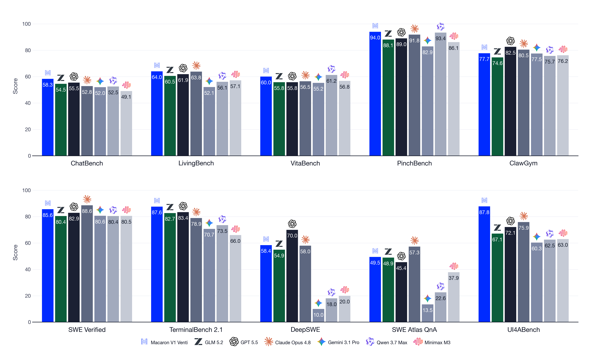

Macaron-V1: Continual Learning after Deployment via Mixture-of-LoRA and Model-Harness Co-Design
TL;DR
- "Macaron-V1: Towards Open Continual Learning with Self-Improvement and Mixture-of-LoRA" (arXiv 2608.09819; Mind Lab tech report, ~75 credited authors; #2 HF paper of Aug 10) is an open agent-model family built for "experiential intelligence" — continuing to learn after deployment. Two pillars: Mixture-of-LoRA (MoL) — a frozen base composing specialist LoRA adapters, exactly one selected per user turn (flagship Venti: 744B GLM-5.2 base + four specialists for chat/agent/coding/GenUI; 50B Tall on Qwen3.6-35B-A3B for local use) — and a recursive self-improvement (RSI) cycle (discovery → expansion → update) orchestrated by the MindForge agentic-RL framework on the MinT post-training platform, with GRPO updating only the adapters.
- Model-Harness Co-design is the connective tissue: a versioned TOML Harness Context Protocol (HCP) makes training and serving share one auditable runtime contract; UI4A, a component-native GenUI harness, cuts output tokens 45% vs raw HTML (672 vs 1,224); harness changes ship on a faster release clock than weights, so a capability can go live as a validated tool before it is transferred into adapter parameters.
- On in-house benchmarks Venti beats all six frontier baselines (ChatBench 58.3 vs GPT-5.5's 55.5; LivingBench 64.0; UI4A-Bench 87.8 vs next-best Opus 4.8 at 75.9); externally it's strong but mixed (TerminalBench 2.1 87.6 best-in-table, SWE-Verified 85.6 vs Opus 88.6). The headline RSI number — adaptive search covering 122/122 base-failure tasks vs 11/122 for the best single configuration — is a frozen-model configuration search*; the paper concedes cross-generation compounding "is not yet measured."
Why this matters
The self-evolving-agents thread in this tracker has converged on a thesis: the bottleneck for deployed agents is no longer the base model but the plumbing that turns deployment experience into safe weight updates. Macaron-V1 is the most complete industrial instantiation of that thesis we've tracked — architecture, RL algorithm, training infrastructure, serving stack, and evaluation suites co-designed and released together (weights at mindlab-research/macaron-v1 on HF, serving harness at MindLab-Research/Mixture-of-LoRA-Harness; MinT and LongStraw numbers come from companion systems reports). The framing is explicit: centralized post-training "approximat[es] a static optimum rather than constituting genuine intelligence"; the goal is a system where "deployment experience feeds a later model–harness revision."
The architectural bet is equally pointed. Continual learning's classic failure mode is cross-task interference through shared parameters. MoL sidesteps it structurally: the base is never overwritten, new capabilities arrive as new registered adapters, and the family gets three release clocks (base; specialists, updated via RSI; harness, shippable without any weight update). That turns "did the model improve, and why?" from an attribution nightmare into a versioned lineage query — the governance instinct behind the admission-gated flywheels we've tracked, scaled to a 744B production service.
The core idea
MoL's design rule is one sentence: "Cluster tasks that share skills and thinking patterns into one LoRA, and keep tasks whose skills diverge sharply in separate LoRAs." Venti ships four: L0 Chat (conversational backbone, model identity — and the routing entry point), L1 Agent (long-horizon tool use, personal-agent workflows), L2 Coding (SWE-style tasks, terminal), L3 GenUI (UI4A rendering, specialized on TSX). Each Venti adapter is rank-16 (α=32) over attention and MLP projections, so serving one base plus four specialists costs ~774.8B logical parameters versus 2.976T for four replicated merged models — a 74% reduction, the systems argument for MoL over merging.
The paper's cleanest formal contribution is a factorization that most self-improvement work leaves implicit. With \(\theta\) the frozen sparse-base parameters, \(\phi\) the trainable LoRA parameters, and \(c\) a versioned harness configuration (the HCP), the agent policy is
where \(o_{\leq t}\) is the conversation plus harness-exposed observations and \(a_{t}\) a model-visible action (message, tool call, or REPL expression); an episode is \(\tau=(o_{0},a_{0},\ldots,o_{T},a_{T},y)\) with \(y\) the task outcome plus process-level judgments. This separates two update paths that are easy to conflate: model optimization changes \(\phi\) with \(\theta\) fixed; configuration search selects a new \(c\). MindForge is bookkeeping over exactly that factorization — one RSI generation is the lineage
and the paper insists a checkpoint without its problem-bank version, selected data, and runtime configuration "is an incomplete record of the experiment."

Figure 6 from the paper: the three loops that share one harness — MindForge runs RL rollouts against the same agent harness used for production serving, with the HCP contract serializing router, memory, resources, prompts, and tool-call tokens so training and serving configurations can be compared explicitly.
How it works
Routing (one LoRA per turn). Each user turn runs a three-hop loop: Route — L0 emits one canonical label (L0–L3) under a 24-token budget with a constrained-decoding grammar; Answer — the selected specialist responds from its own conversation view; Summary — the specialist emits a ≤192-token summary stored server-side. Per-adapter views make this cheap: a specialist sees its own past turns verbatim and other specialists' turns as their summaries, and because that rendering is deterministic, re-entry reconstructs a byte-identical prefix and hits the engine's native prefix cache unmodified. Measured routing accuracy is 99.12% on Venti (6,391/6,448, zero parse errors); the full loop costs 4.68s per Venti turn (route 0.54s / answer 3.17s / summary 0.97s), 1.76s on Tall.
The RSI cycle (MindForge on MinT).
# Macaron-V1 recursive self-improvement (Sec. 3.2, compressed)
G0 <- (seed problem bank, model phi_0, HCP c_0)
repeat per generation t:
# DISCOVERY: curriculum adapts to current policy
bank_t <- model proposes harder task variants (lift constraints,
hidden preferences, chained sub-goals, contradictions)
keep task iff quality (well-defined eval) AND
learning value (current model unreliable on it)
# EXPANSION: search behavior under a fixed model-HCP pair
trajs <- rollout(pi_phi(.|theta, c_t), bank_t) # scored on outcome + process
audits localize each failure to model / task / harness-config
candidate HCP edits (prompts, skills, tool exposure, hooks)
accepted iff automatic eval pass on affected slice
(human review only for tool-exposure / safety changes)
# UPDATE: transfer validated behavior into parameters
D_t <- trajectory selection(trajs) # drop invalid, dupes, uninformative
phi_t+1 <- GRPO(phi_t; D_t) # LoRA-only; 744B base stays frozen
c_t+1 <- accepted HCP, registered as next runtime contract
MindForge links (bank_t, D_t, phi_t+1, c_t+1) to parents + eval evidence
redeploy (phi_t+1, c_t+1); changed competence induces new task distribution
Discovery generates its own curriculum from a versioned seed bank; expansion is where model-harness co-design bites, because audits can blame the configuration (an unnecessary round-trip, a missing tool boundary, an instruction causing premature routing) and fix it without touching weights; update runs GRPO on selected trajectories — what the paper calls "context learning," carefully defined as validated-trajectory transfer, not in-context learning.
Harness as first-class citizen. The HCP is a versioned TOML contract covering runtime selection, tool allowlists/MCP servers, prompts/skills, and session state — MindForge imports the same harness object used in production, foreclosing train–serve tool drift at the source. UI4A gives L3 an "Import + Component + State + Action" substrate with a four-field action contract including NoAI visibility boundaries for fields the model must not observe. The REPL harness compiles recurring workflows into helpers via promote_tool — only after a private validation run, since a promoted helper goes live in both serving and MindForge rollouts. This is "Live Harness Updates Enable Continual Learning": capabilities ship first as validated tools/configs on the fast clock, then transfer into adapters when trajectory evidence warrants.
Infrastructure. MinT manages model-state lineage over a resident frozen base with a measured million-entry adapter catalog. LongStraw makes long-context GRPO feasible via a response-only autograd boundary — capture prompt state without autograd, replay one response at a time with it:
(\(P\) the shared prompt length, \(R_i\) the response lengths in a GRPO group; live memory scales with the longest single response, not the full sequence). Verified operating points include a complete 2,097,152-token-prompt end-to-end online RL transaction on GLM-5.2 across 32 H20s. Rollout–training mismatch on the sparse base is handled by R3 rollout-routing replay, DSA implementation alignment, and IcePop-style token masking.
Results

Figure 1 from the paper: Macaron-V1-Venti main results across the Personal Intelligence, agent, coding/terminal, and GenUI tracks.
Venti vs GLM-5.2 (its own base), GPT-5.5, Opus 4.8, Gemini 3.1, Qwen 3.7, and Minimax M3 (0–100; * = imported public value):
- Personal Intelligence (in-house): ChatBench 58.3 (best; GPT-5.5 55.5, base GLM-5.2 54.5); LivingBench 64.0 (best; Opus 4.8 at 63.8). Suites are small: 46 ChatBench cases, 40 LivingBench scenarios, 161 UI4A-Bench cases.
- Agent: τ³-Bench 69.3 and PinchBench 94.0 (both best), but VitaBench 60.0 trails Qwen 3.7 (61.2), VitaBench2 46.0 trails Gemini 3.1 (50.2), ClawGym 77.7 trails GPT-5.5 (82.5).
- Coding/terminal: SWE-Verified 85.6 (above base's 80.4, below Opus 88.6*); TerminalBench 2.1 87.6 (best, all baselines starred); DeepSWE 58.4 well below GPT-5.5's 70.0*.
- GenUI: UI4A-Bench 87.8 vs next-best 75.9 (Opus) — a +11.9 gap on the benchmark Mind Lab built for its own protocol.
- Tall vs its Qwen3.6-35B-A3B base (same protocol, all seven rows improve): ChatBench 48.0→54.9, UI4A-Bench 33.9→59.3, SWE-Verified 73.4→75.4 — the cleanest evidence that the MoL + post-training recipe itself adds capability.
- Routing costs nothing measurable: on a 3-arm Vita-delivery test (5 seeds × 100 tasks), Venti scores 0.636±0.026 direct-L1, 0.650±0.030 routed, 0.632±0.019 routed+KV-reuse — within noise (Tall's routed arms sit slightly below direct).
- Expansion coverage: on 122 tasks the base fails outright, 69 adaptive configuration-search jobs (450 attempts, 3.69/task) reach 122/122 cumulative coverage with the model frozen; the stronger of two single-configuration sweeps reaches 11/122. The paper flags this honestly as "a coverage ceiling under adaptive configuration selection," not a held-out result.
How it connects
- [SEA: Governed Post-Training Flywheel for Self-Evolving Agents] (added to the tracker today) is the closest sibling: both turn deployment experience into LoRA weight updates behind an explicit admission gate. SEA's loop is teacher-distillation-driven with a MAPE gate; Macaron's is GRPO on self-generated validated trajectories with an automatic eval-pass gate — no teacher anywhere, which also makes it a counterpoint to the tracker's [on-policy distillation] line: Macaron bets that trajectory selection plus RL, not a stronger teacher, is the update signal that scales with deployment.
- [Next-Generation Agentic RL Systems Enable Self-Evolving Agents] (arXiv 2607.01120) argued the missing piece is systems that turn agent activity into learning data. MindForge + MinT + LongStraw is that argument productized — including the unglamorous parts (train–serve contract, adapter catalogs, 2M-token online-RL memory boundaries) the position paper could only gesture at.
- [Harness-R1] trained the harness-side engineer; HarnessCompass disciplined harness search. Macaron's Model-Harness Co-design generalizes both: the HCP makes configuration a versioned, auditable variable \(c\) distinct from weights \(\phi\), and the 122-vs-11 expansion result quantifies how much apparent "model failure" is actually configuration failure — the same misattribution the harness papers keep finding.
- The [Reliable Self-Evolving Agents] survey's core demand — evolution behind verification, with rollback — maps directly onto promote-after-validation tools, eval-gated HCP acceptance, and demote-on-failure logging; Macaron adds a release-engineering answer (three clocks, lineage as the unit of a generation).
- The [Self-Improvement survey]'s question — where does the improvement signal live? — gets a crisp answer: in the lineage, not the checkpoint. That framing (a generation = bank + data + weights + config) is worth stealing even if you never run a 744B base.
Critical take
The title says "continual learning"; the evidence is one snapshot. The paper's own limitations section is admirably blunt: the released Venti "cannot, by itself, distinguish a compounding RSI effect from a single round of self-generated-data training, and cross-generation lift is not yet measured." The flagship RSI experiment never takes an optimizer step — 122/122 is adaptive configuration search coverage, so the one quantified piece of the loop is the piece that doesn't involve learning. Second, the benchmarks where Venti wins biggest are the ones Mind Lab built: ChatBench and LivingBench "share source domains and failure taxonomies with the RSI loop" (their words), scored by LLM judges with no reported human-judge agreement, frozen data cutoff, or item-level overlap audit, on 46 and 40 cases; on external agent benchmarks Venti is mid-pack as often as it leads, and many baseline values are imported rather than re-run. Third, one-LoRA-per-turn is a product decision dressed as architecture: 99.1% routing accuracy is measured on Mind Lab's own trace (62% of it GenUI, the easiest class), routing adds ~1.5s (32%) to every turn, and the Vita ablation shows it buys no measurable quality over just using the agent adapter — the real payoffs are training isolation and the 74% memory saving, legitimate but different claims. Finally, "open" deserves an asterisk: weights and harness are genuinely released, but the base is Zhipu's 744B GLM-5.2 (Tall is the reproducible artifact), MinT/MindForge numbers come from companion reports rather than matched runs, and the report does not document the consent basis for the de-identified product conversations feeding the loop. None of this makes the system less interesting — the \((\theta,\phi,c)\) factorization, shared train/serve harness, and three release clocks are the right skeleton — but as of v1 this is a well-engineered substrate for continual learning, with the continual part still a promissory note.
If you remember three things
- Factor the agent as \(\pi_{\phi}(a\mid o;\theta,c)\) — frozen base \(\theta\), trainable adapters \(\phi\), versioned harness contract \(c\) — and continual learning's attribution problem becomes tractable: an RSI generation is a lineage (bank, model, HCP) → trajectories → (data, next model, next HCP), never a bare checkpoint.
- Fix the configuration before the weights: with the model frozen, adaptive harness-configuration search recovered 122/122 tasks the base "failed," versus 11/122 for the best single configuration — much of what looks like model failure is harness failure, and the fast harness release clock exploits exactly that.
- Discount self-graded wins: Venti's clearest leads (ChatBench 58.3, LivingBench 64.0, UI4A-Bench 87.8) are on in-house, LLM-judged suites drawn from the distribution the RSI loop optimizes; the externally checkable story is solid-but-mixed, and cross-generation compounding is explicitly unmeasured.